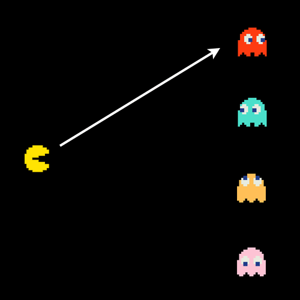
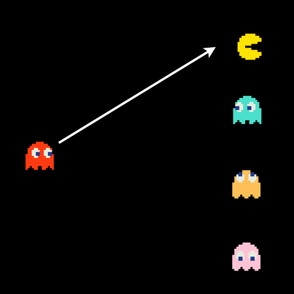
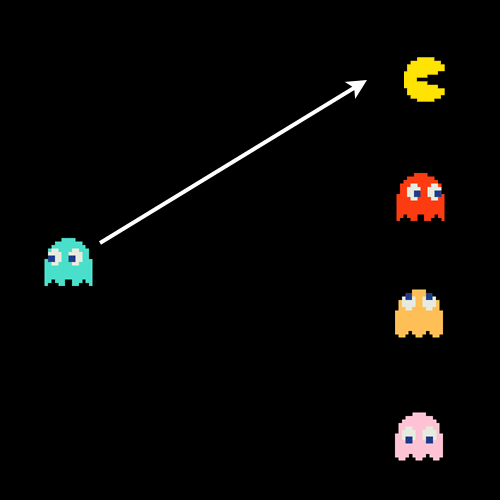
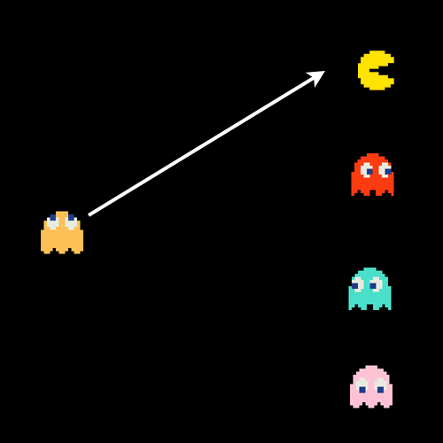
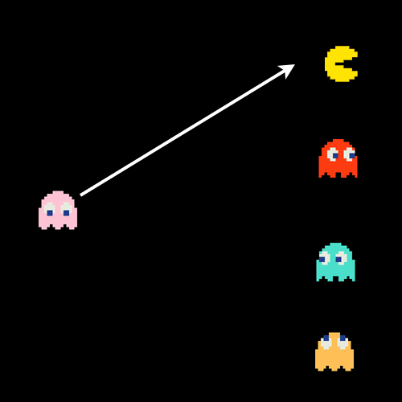

Data Structures and Algorithms
A complete college course in 45 minutes
By: David Turner and Janessa Det
Motivation
- Your code is slow
- Tech job interviews
- You can solve a multitude of problems!
What's an algorithm?
- A way to solve a problem
- A step-by-step approach
How programmers look at algorithms
- An algorithm operates on N things
- Analysis looks at performance as N grows
Example: Collision detection

Collision detection
- N objects
- Nested loops:
- Count how many steps the code takes
for each object A:
for each object B:
if A != B and A collides with B:
print "boom"
Collision detection: analysis
- N objects
- How many collision checks?
Collision detection: analysis
    Collision detection: analysis
- N objects
- How many collision checks?
- N2 collision checks!
Data structures
- Organize information
- For efficiency or convenience
- Examples: array, objects1, ...
- Sorted array
Collision detection: doing better
Collision detection: doing better
- Idea: sort objects left-to-right
- Compare to middle object
- Look at left or right half
- Repeat
Binary search
Janessa, image of binary searchHow many checks?
- How many items with 1 split? 2 (+ 1 splitter)
- How many items with 2 splits? 4 (+ 2 splitters)
- How many items with 3 splits? 8 (+ 3 splitters)
- How many items with 4 splits? 16 (+ 4 splitters)
- ...
How many checks?
- 2N items per check
- How many checks per item?
Brief review of logarithms
- log is the inverse of exponentiation
- x = be
- logb(x) = e
How many checks?
- log2 N checks per item
- N * log2 N checks total Janessa, graph of log(n)
- Much faster than N2
Divide and conquer
- Break a big problem down into small problems
- Solve the small problems
- (sometimes) combine the small problem results
Even faster collision detection
- Divide space into small squares
- Only check objects in the same square
- Data structure: array of arrays of arrays Janessa, we should illustrate that data structure
Evaluating algorithms and data structures
Big O notation
- Worst case scenario
- Don't sweat the small stuff
- N2 + 5*N + 17 means O(N2)
- O(1): constant time
- O(N): linear time
- O(2N): exponential time
Standard data structures
- Array
- Binary search tree
- Hash table ("object")
Array
- Look up element by number: O(1)
- Find element: O(N)
- Insert at end1: O(1)
- Insert in middle 1: O(N)
- Delete from middle 1: O(N)
Binary search tree
- Look up element by number: O(N)
- Find element: O(log N)
- Find next element: O(1)
- Insert at end: O(log N)
- Insert in middle : O(log N)
- Delete from the middle : O(log N)
Hash table1
- Find element: O(1)
- Find next element: O(N)
- Insert: O(1)
- Delete: O(1)
Standard data structures
- Know these bounds
- Practice implementing these
Selection sort
- Find the smallest element
- Put it at the beginning
- Repeat with remainder of array
Insertion sort
- Make a new empty array
- Take the first element of the old array
- Put at the correct place in new array
- Repeat with remainder of old array
Merge sort
- Divide and conquer
- Split array into two halves
- Sort the first half
- Sort the second half
- Merge the two sorted lists
Merging
Janessa, illustration?Conclusion
- You can fix slow code!
- Data structures and algorithms can help
Exercise: implement mergesort
- Split array into two halves
- Sort the first half
- Sort the second half
- Merge the two sorted lists